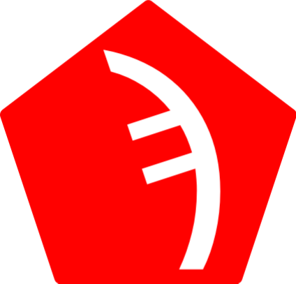

Right now, the computer will do the same thing each time the program runs. Programming is much more powerful when it can make decisions. For that, programmers use if statements. An if statement can do different things depending on if a condition is true or false.
set x to 1
if x = 1:
say("x = 1!")
end
Now if x is anything other than 1, it won't say anything! But if you don't change the code directly, it will still always say the same thing! This is why we need user input. The ask() command allows the computer to get information from you.
set colour to ask("What is you favourite colour? ")
if colour = "green":
say("That's my favourite too!")
else:
say("That is a fun colour.")
end
If you type "green", it says, "That's my favourite too!", but if you type anything else, it says, "That is a fun colour."! The same program is now giving different outputs! The else tells the computer: If the condition is not true, then do this. You can also chain if and else together to make more complex decisions.
set num to number(ask("Give me a number. "))
if num > 0:
say("Your number is positive.")
else if num < 0:
say("Your number is negitave")
else:
say("Your number is zero.")
end
number(ask("Give me a number. ")) turns what you type from a string to a number. A string is text, like "hello", or "world", and number is a value like 1, 5.7, or 3. Since "4" is a string (see the double quotes), it need to be coverted to a number to be compared with 0. This also works the other way:
string(3)
will make 3 into "3".
What if you end up writing a long if/else chain, and you are checking equality?
set day to "Monday"
if day = "Monday":
say("start of school")
else if day = "Tuesday":
say("2nd day of shool")
else if day = "Wendsday":
say("HUMP DAYYYY")
else if day = "Thursday":
say("penultimate day of school")
else if day = "Friday":
say("last day of school")
else if day = "Saturday:
say("first day of the weekend")
else if day = "Sunday":
say("last day of the weekend")
end
It is fine, but kind of messy, and can be slow. In programming, we use something called big O notation. Big O notation is used to display how long something takes to run in the worst case scenario. Big O scales with the size of the thing you are measuring. Lets apply it to the example. Sampi looks through if statements one condition at a time, so if "day" is set to "Saturday", it will take 7 checks. This is called O(n). The "O" shows it is using big O notation, and the (n) shows how it scales. With 18 days, the worst case scenario is 18, when if there are only 4, the longest it could take is 4 checks. So "n" is the number of things, and since it is just an "n", it means it takes n numeber of check at worst. There or fun ones like O(2n), O(n²), and O(√n), but they are rare.
Lets apply make our code faster. At least in Sampi, a switch statement is used to turn O(n) into O(1). O(1) and O(n) are the most common ones you will see. O(1) means it allways takes the same amount of time. You can have 3 days, you can have 100 days, and, on average it will allways take the same amount of time.
set day to "Monday"
find day:
"Monday":
say("Start of school.")
"Tuesday":
say("2nd day of shool.")
"Wendsday":
say("HUMP DAYYYY!!!!")
"Thursday":
say("Penultimate day of school.")
"Friday":
say("Last day of school.")
"Saturday:
say("First day of the weekend.")
"Sunday":
say("Last day of the weekend.")
end
You can you ":" to be the default code, just make sure it comes last. And "or" can be used to have mutiple inputs run the same code.
set day to "Monday"
find day:
"Monday" or "Tuesday" or "Thursday" or"Friday":
say("It is a school day.")
"Wendsday":
say("HUMP DAYYYY")
:
say("It is the weekend!")
end
Find is not prefect, and has lots of limmits. You can only test againts String or Number literals, and negitve numbers are not (yet) supported. You cannot test it a variable is less than or greater than a value.